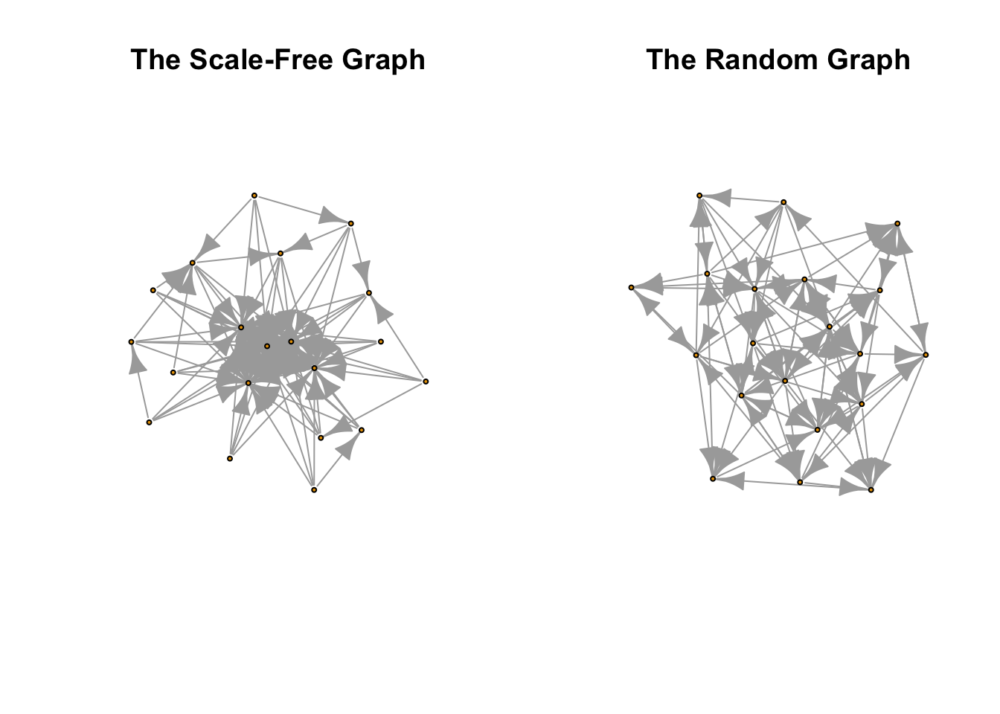
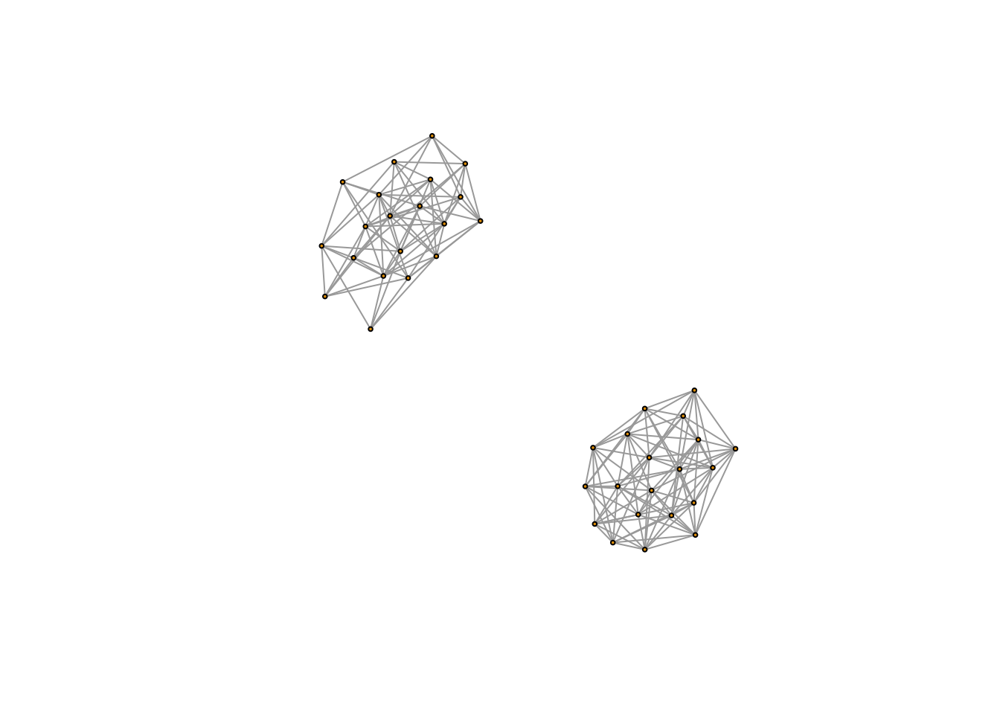
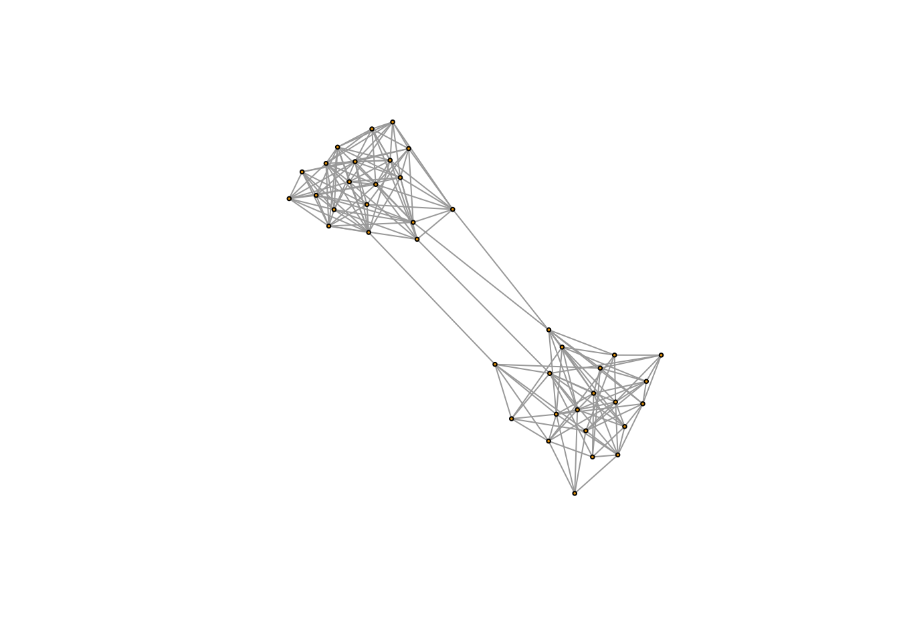
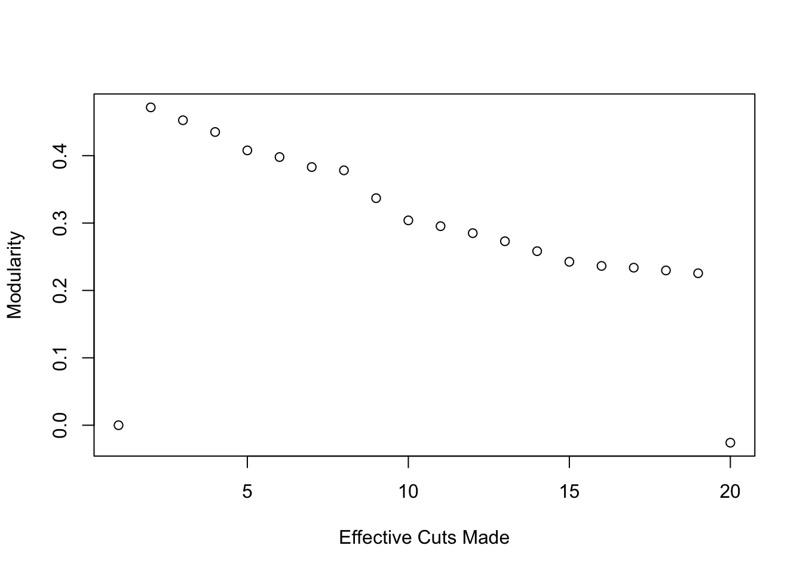
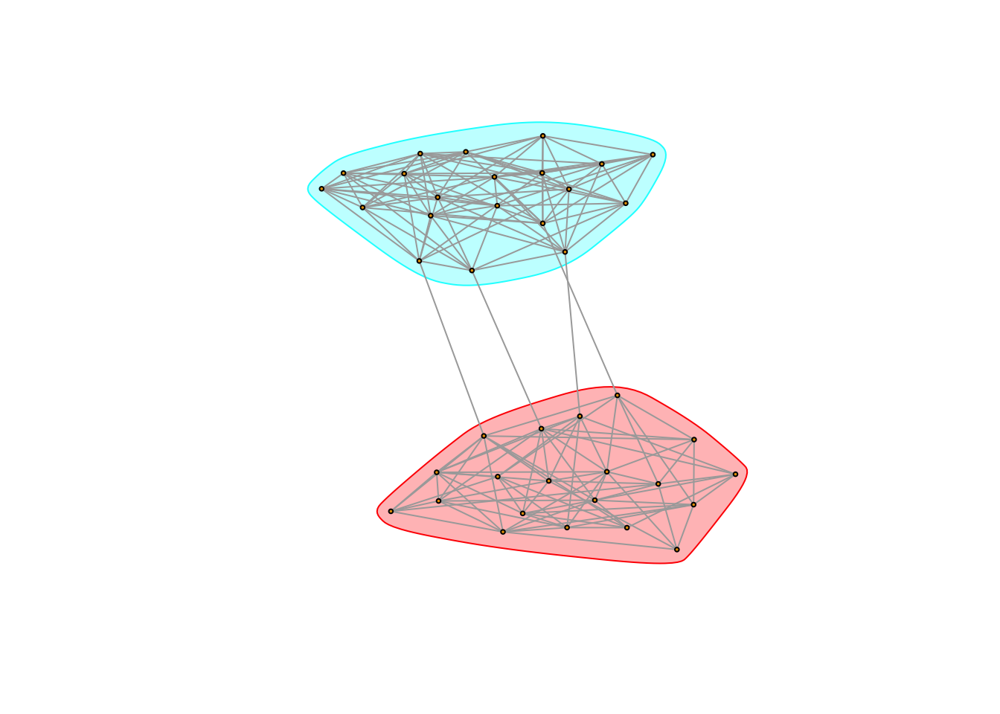
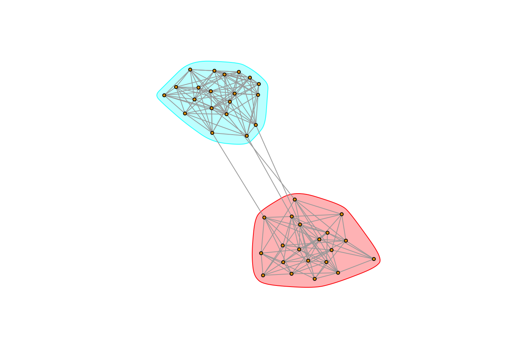
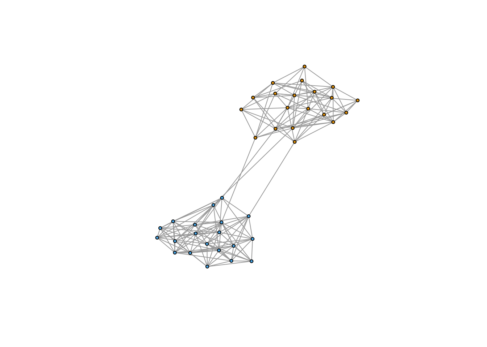

14 Finding Groups in Networks
Groups are one of the many tools we have for analyzing network structure. Group detection focuses on the presence of ties - in attempt to identify densly connected groups of actors. There are many different tools for doing this - we will cover four: component analysis, k-cliques, modularity, and cohesive blocking. Each method has its own uses and theoretical underpinnings, so I put citations of famous papers that use each method at the bottom of the script.
14.0.1 Component analysis
The most basic form of network group is a component. In a connected component, every node is reachable via some path by every other node. Most network datasets have only a single large connected component with a few isolates - however, some unique datasets might have three or four large, distinct components.
In a directed graph, components can be weakly or strongly connected. If node i can reach j via a directed path and j can reach i via a directed path, for all i and j nodes in the component, then we say the component is strongly connected. If all nodes are only reachable from a single direction, (i.e. i can reach j via a directed path, but j can’t reach i), then we say the component is weakly connected.
The ?decompose.graph function in igraph will take a network and decompose it into its connected components. We can then analyze each component separately.
library(igraph)
set.seed(1234)
g1 <- barabasi.game(20, 1, 5) # Generate a scale-free network
V(g1)$name <- as.character(1:20)
g2 <- erdos.renyi.game(20, graph.density(g1), directed = TRUE)
V(g2)$name <- as.character(21:40)
g3 <- graph.union(g1, g2, byname = TRUE) # The ?graph.union function combines two networks.
plot(g3, vertex.label = NA, vertex.size=2, edge.arrow.size = .1) # Two distinct networks in a single plot
Now let’s use decompose to isolate each component. There will be two components.
component_list <- decompose.graph(g3, mode = "weak")
component_list## [[1]]
## IGRAPH cad58c2 DN-- 20 85 --
## + attr: name_1 (g/c), name_2 (g/c), power (g/n), m (g/n), zero.appeal
## | (g/n), algorithm (g/c), type (g/c), loops (g/l), p (g/n), name (v/c)
## + edges from cad58c2 (vertex names):
## [1] 2 ->1 3 ->1 3 ->2 4 ->1 4 ->2 4 ->3 5 ->1 5 ->2 5 ->3 5 ->4
## [11] 6 ->1 6 ->2 6 ->3 6 ->4 6 ->5 7 ->1 7 ->2 7 ->3 7 ->4 7 ->6
## [21] 8 ->1 8 ->2 8 ->3 8 ->4 8 ->5 9 ->1 9 ->2 9 ->3 9 ->4 9 ->7
## [31] 10->1 10->2 10->3 10->4 10->5 11->1 11->2 11->3 11->4 11->5
## [41] 12->1 12->3 12->5 12->6 12->8 13->1 13->2 13->3 13->4 13->5
## [51] 14->1 14->3 14->5 14->8 14->13 15->1 15->2 15->3 15->4 15->5
## [61] 16->1 16->2 16->3 16->5 16->10 17->1 17->2 17->3 17->5 17->7
## + ... omitted several edges
##
## [[2]]
## IGRAPH 2eb0806 DN-- 20 94 --
## + attr: name_1 (g/c), name_2 (g/c), power (g/n), m (g/n), zero.appeal
## | (g/n), algorithm (g/c), type (g/c), loops (g/l), p (g/n), name (v/c)
## + edges from 2eb0806 (vertex names):
## [1] 21->22 21->25 21->29 21->37 21->39 22->24 22->31 22->32 22->36 23->24
## [11] 23->27 23->29 23->32 23->35 23->37 23->38 24->22 24->30 25->21 25->22
## [21] 25->24 25->34 25->37 26->21 26->25 26->27 26->30 26->33 26->36 27->29
## [31] 27->30 27->31 27->33 27->34 27->36 27->39 28->27 28->33 28->34 28->35
## [41] 28->40 29->25 29->26 29->27 29->34 29->37 29->40 30->25 30->34 30->40
## [51] 31->33 31->39 32->26 32->28 32->29 32->35 32->39 33->21 33->23 34->24
## [61] 34->25 34->27 34->29 34->38 34->39 34->40 35->23 35->26 35->29 35->39
## + ... omitted several edgesIt returns a list with two graphs in it - one for each component.
par(mfrow = c(1, 2))
plot(component_list[[1]], main = "The Scale-Free Graph", vertex.label = NA, vertex.size = 3)
plot(component_list[[2]], main = "The Random Graph", vertex.label = NA, vertex.size = 3)
14.0.2 Cliques
Cliques are fully connected subgraphs within a network structure; they are like the caves in the caveman structure we learned about a few weeks ago. We often want to find all of the cliques in a network of various sizes. We could have a theory for example that people will dress or behave similarly or affect those in their cliques. That is, we might imagine cliques to be meaningful for the outcomes we are interested in study. We can do this with the clique function in igraph.
clique_out <- cliques(g1)## Warning in cliques(g1): At igraph_cliquer.c:56 :Edge directions are ignored for
## clique calculationslength(clique_out)## [1] 467Quite a few… imagine the number of cliques in a really large network If we want to look for cliques of a certain size we can use the min and max arguments.
clique_four <- cliques(g1, min = 4, max = 4)## Warning in cliques(g1, min = 4, max = 4): At igraph_cliquer.c:56 :Edge
## directions are ignored for clique calculationslength(clique_four)/length(clique_out)## [1] 0.2955032Cliques of size four make about 25% of total cliques in the network.
14.1 Cohesive Blocking
Cohesive blocking builds on the idea of cliques. It starts at the level of the component and identifies large substructures nested within the component. It then moves to those large substructures and identifies smaller and smaller nested substructures, until it reaches cliques. It is therefore a useful way to operationalize network embeddedness. We will run it on a small world network size 20.
g2 <- as.undirected(g2)
g4 <- watts.strogatz.game(1, 20 , 5, .1)
V(g4)$name <- as.character(1:20)
g5 <- graph.union(g2, g4)par(mfrow = c(1, 1))
plot(g5, vertex.label = NA, vertex.size=2, edge.arrow.size = .1) # Two distinct networks in a single plot
The function for cohesive blocking is ?cohesive.blocks. It is very inefficient so it will take awhile to run. Run time depends on the number of edges in the network and the degree of nestedness. Don’t even bother running it on very large networks.
blocks <- cohesive.blocks(g5) # The basic function for finding cohesive blocks
blocks(blocks) # This tells us what the blocks are and which nodes are in them
cohesion(blocks) # This gives a cohesion score for each block. Cohesion is the minimum number of vertices you must remove in order to make the block not strongly connected.
plotHierarchy(blocks) # Finally, plotHierarchy shows the nestedness structure of the blocks.14.2 Group Detection
The previous methods for detecting groups require either that all individuals in a group are connected or that the groups are completely isolated from one another. We might wish to relax those rather stringent requirements. For example, if we randomize our g5 network, which was the union of a random graph and a watts.strogatz graph, enough times, it will connect the two separate networks with a handful of edges.
g5 <- g5 %>% rewire(keeping_degseq(niter = vcount(g5) * 0.05))
plot(g5, vertex.label = NA, vertex.size=2, edge.arrow.size = .1) # Two distinct networks in a single plot
Our component analysis would not reveal that there are two distinct groups - instead the whole graph would appear connected. But we know there are (at least) two groups in the network - we designed it that way - so how might we identify them? We could define groups as sets of nodes who have a higher proportion of edges going inwards rather than outwards - that is, solidarity is strongest within the group - and use that definition to search for groups.
How does group detecion work? Remember the Girvan and Newman algorithm we covered in class? We can write a simple version of it in R. Here is one I wrote with comments.
# first we create a function which defines what happens at each iteration of our algorithm
edge_betweenness_step = function(mat){
# graph the matrix
net <- graph.adjacency(mat)
# evaluate edge betweenness
edgebets <- edge_betweenness(net)
# identify the edge that has the highest betweenness
to_delete <- which.max(edgebets)
# delete that edge
net_new <- delete.edges(net, to_delete)
# evaluate the number of components
net_new <- decompose(net_new)
# if the number of components grew to be greater than 1, return the matrices of those two components
if(length(net_new) > 1){
return(lapply(net_new, get.adjacency))
} else {
# otherwise return the matrix that we started with, minus the deleted edge
return(get.adjacency(net_new[[1]]))
}
}
# recursive function to measure depth of a list
depth <- function(this) ifelse(is.list(this), 1L + max(sapply(this, depth)), 0L)
# next we will repeatedly run this step algorithm a certain number of times, at each step applying it to every component we have created
# so at first, we start with the whole graph, we delete the highest between edges until the network is split into two components.
# then we apply the above to each of the network subsets
# we do this until we have made N effective cuts
edge_betweenness_clustering <- function(net, desired_depth = 15){
# required packages
require(reshape2)
# turn our net into a matrix
net_mat <- get.adjacency(net)
# run the first iteration of edge_betweenness and save the result in a list
net_temp <- list(edge_betweenness_step(net_mat))
# while actual depth is < desired_depth
# depth signifies how many effective cuts have been made
# where an effective cut is any cut that divides a component into at least two new components
while(depth(net_temp) < desired_depth){
# apply edge_betweenness recursively to every component in the list
net_temp <- rapply(net_temp, edge_betweenness_step, how = "list")
}
#get the row.names of every matrix (i.e. the actors who are in each component/group at the end of the iterations)
groups <- lapply(unlist(net_temp), row.names)
# name the groups according to their order
names(groups) <- as.character(1:length(groups))
# use melt to produce a person to group data.frame
memberships <- melt(groups)
# convert value (i.e. id) to a character vector from factor
memberships$value <- as.character(memberships$value)
# reorder the memberships data.frame so that it matches the order of vertices in the original network
memberships <- memberships[match(V(net)$name, memberships$value),]
# construct the communities object using this helpful function provided by igraph
output <- make_clusters(net,
membership = as.numeric(memberships$L1),
algorithm = "edge_betweenness_attempt",
modularity = TRUE)
# return the communities object
return(output)
}mod_comparison <- c()
for(i in 1:20){
mod_comparison <- c(mod_comparison, edge_betweenness_clustering(g5, i)$modularity)
}
plot(1:20, mod_comparison, ylab = c("Modularity"), xlab = c("Effective Cuts Made"))
It looks like a simple 2 component solution performs best - modularity actually decreases as we increase the number of cuts. Let’s see how it looks on the network.
plot(g5,
vertex.label = NA,
vertex.size=2,
edge.arrow.size = .1,
mark.groups = edge_betweenness_clustering(g5, 2)) It works!
This was a fun exercise, but my code is quite slow and not that intelligent. Thankfully, there are a plethora of group detection algorithms in igraph written to be much faster than mine. The full list is: edge.betweenness.community (i.e. what I tried to make above), fastgreedy.community, label.propagation.community, leading.eigenvector.community, multilevel.community, optimal.community, spinglass.community, and walktrap.community.
This webpage has a summary of their pros and cons for an older version of igraph: http://bommaritollc.com/2012/06/summary-community-detection-algorithms-igraph-0-6/
The main takeaway is that you should tailor your algorithm choice to your network. Certain algorithms are designed for directed or undirected graphs, and work better with small or large graphs.
Each algorithm as its own igraph function. These functions produce lists with information about the algorithm results. Element 1 holds a vector that details which group each node is in, which I will refer to as the membership vector. Element 6 holds the modularity of the network given the group detection algorithm.
For undirected graphs, you can use the optimal or multilevel algorithms.
communityMulti <- multilevel.community(g5)For directed graphs, edge betweenness is generally your best bet, though the walktrap algorithm performs well too.
communityWalk <- walktrap.community(g2)
communityEB <- edge.betweenness.community(g2)
communityInfo <- infomap.community(g2)We can use the mark.groups argument in plot to see the groups.
plot(g5, vertex.size = 3, vertex.label = NA, mark.groups = communityMulti)
Alternatively, we can just color the nodes by group membership. In this case, we can just use the membership function
V(g5)$color <- membership(communityMulti)
plot(g5, vertex.size = 3, vertex.label = NA)
This becomes less feasible as the number of groups increases! It is better in that case to use one of the coloring functions I sent along via Canvas a few weeks back.
14.2.1 Modularity
Modularity takes a given group structure and calculates how separated the different groups are from each other. It therefore operationalizes our notion of groups above by calculating the proportion of ties that are within groups as opposed to between them. Networks with high modularity have dense connections between the nodes within modules but sparse connections between nodes in different modules.
We can think of modularity as both a measure of how effective a given grouping algorithm is - i.e. higher modularity means the alogrithm is identifying distinct, sociall separate groups. But it can also be thought of as a measure of the saliency of groups to the network in general. The higher modularity the more that groups structure the network. Modularity measures the extent to which a network can be divided into distinct modules or groups.
Getting a network’s modularity in igraph is easy! We can either access the modularity score directly
communityMulti <- multilevel.community(g5)
communityMulti$modularity## [1] 0.4270216 0.4716049Or use the modularity() function.
modularity(communityMulti) # We can use the modularity() function on a group detection output.## [1] 0.4716049